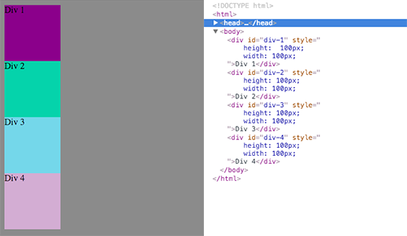
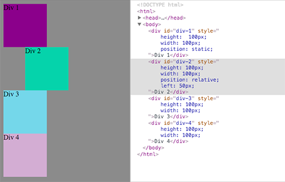
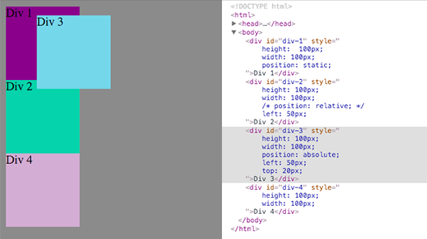
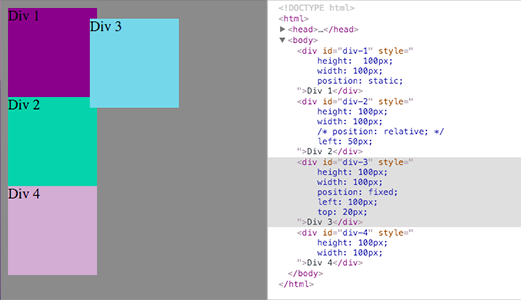

CSS...yep
Let us clarify CSS Positioning
October 15, 2015
First, a few things about positioning in CSS
So you've got a simple HTML document with the usual elements like head, body, a couple divs, and a footer. If we take a closer look at those divs (that only have width and height values of 100px), their position on the page (remember with no CSS) they'd appear like so:
As you can see the normal flow of content appears like blocks stacked on top of each other. This is called static positioning. It's the default position for elements. But you must be wondering where's the excitement, the thrill, the pizazz that CSS boasts about all the time? You wanna move shit around, see those divs get into action! Next thing you do is look up on Google "how to position elements css" and up pops the word 'relative.' You plop that into your code and.....uhh what did it do?
Relative
Yeah so you're not really sure what putting position: relative; really did to your divs. But here I'll show you a clearer illustration of whats going on. Relative positioning moves an element in relation to where it would have been had it not been moved, leaving a gap where it used to be. Back to our toy blocks, if you keep div 1 at static positioning (default), but you make div 2's position relative and give it a left margin of 50px, you can see div 2 moved left 50px from where it was initially while also leaving a gap of 50px.
Take note that divs 3 and 4 stayed in their static positions while div 2 moved. Relative positioning stays within the scope of the element being re-positioned, without affecting the flow of content.
Absolute
Ok cool great. But at some point positioning elements has to affect the surrounding elements right? Otherwise we can't really do that much with CSS and it all becomes a huge let down. Let's explore absolute positioning, then. So we've got these four divs, with divs 1, 3, and 4 being static, and div 2 being relative. What we're gonna do now is remove relative positioning and left 50px from div 2 (so it goes back into the normal content flow) but we'll change div 3 position to absolute and give it a left pixel value of 50 and top of 20px. Check it out:
WAIT what just happened??? Why is div 4 now riding up against div 2, gettin' all personal and intrusive on div 3's space. RUDE. And what's div 3 doing at the top, chillin by div 1? Well, because we changed div 3's positioning to absolute, it's movement is in relation to its closest positioned ancestor element. Ancestor in this sense refers to the parent or parent of the parent (grandparent) of div 3 which is the body in this example; that's why div 3 is now up near the top of the page by div 1. What's also important to note is that div 3's re-positioning did not leave a gap where it used to be, so div 4 took it as an opportunity to fill in that gap and snuggle up to div 2 (they're dating now btw).
Fixed
Ahh fixed. Finally a name that describes exactly what the positioning will do! I think you can guess what effect fixed positioning will have. It won't move! Even when you scroll. Therefore it is fixed. You should also note that fixed positioning is similar to absolute positioning in that it positions relative to its closest positioned ancestor and doesn't leave a gap. But the exception with fixed is that it will not follow the stacking model, so it'll overlap elements.
Feeling a little less nauseous about CSS positioning? Hopefully all this repositioning business is making at least some sense now. It gets easier as you keep practicing, I promise!